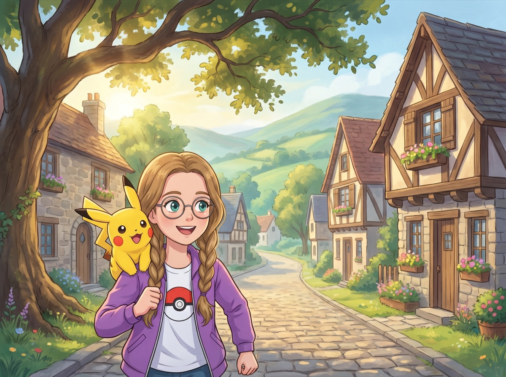
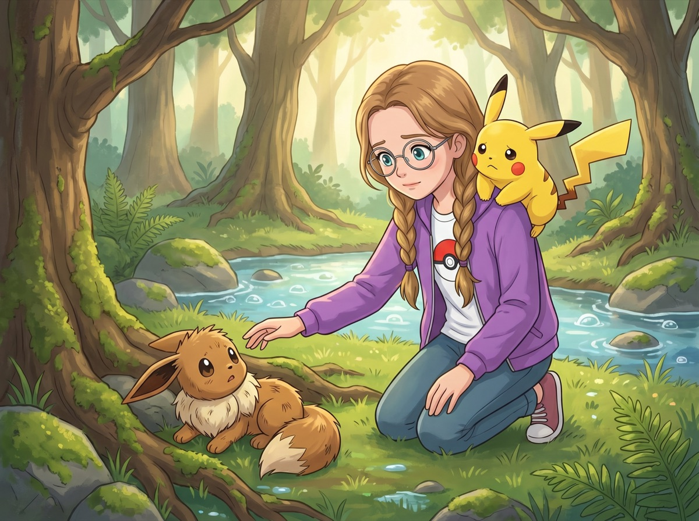
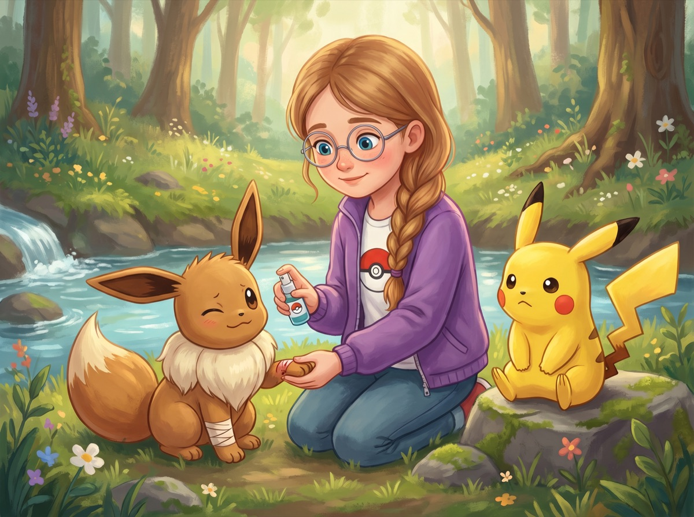
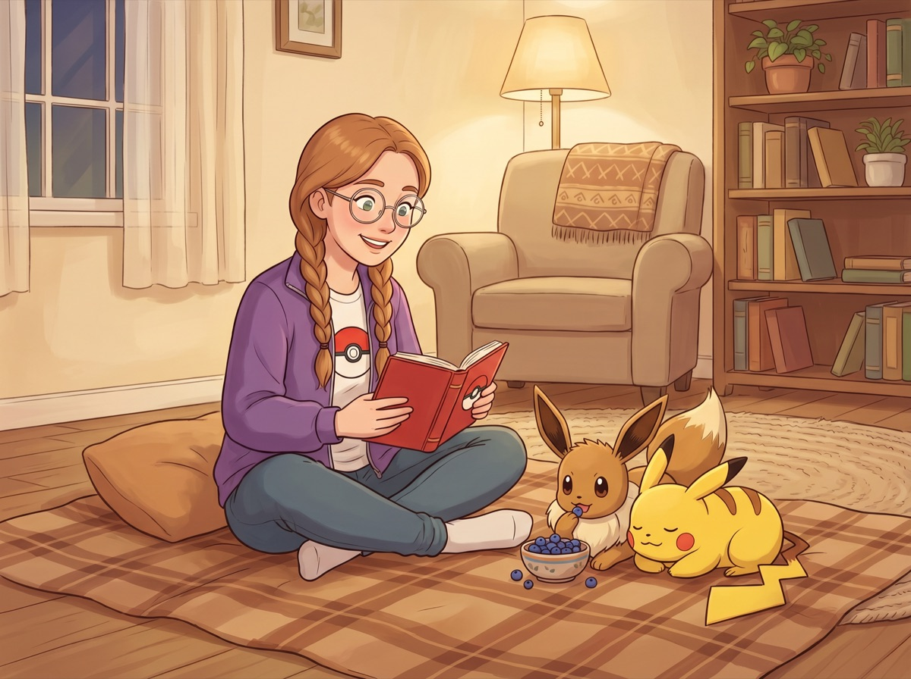
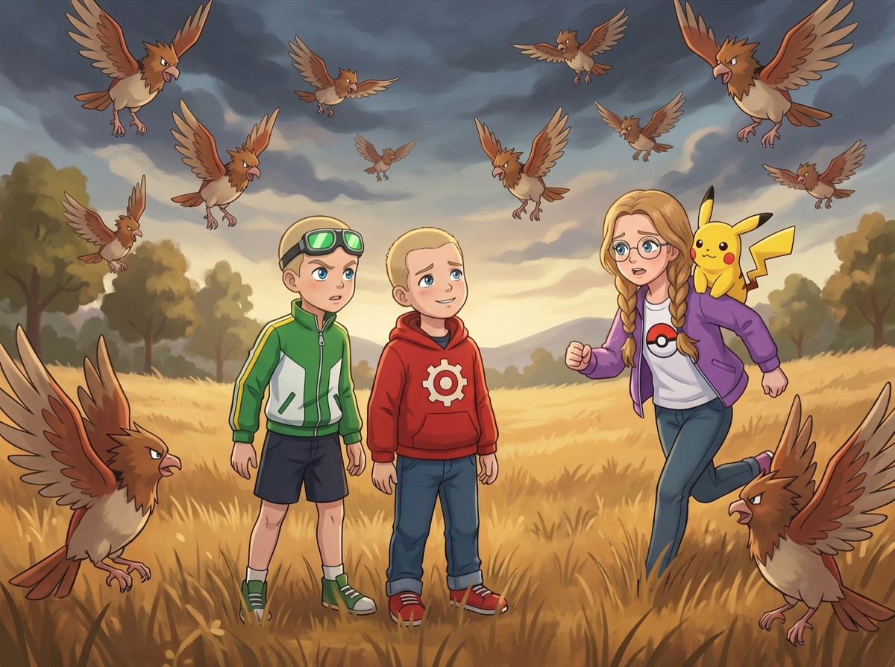
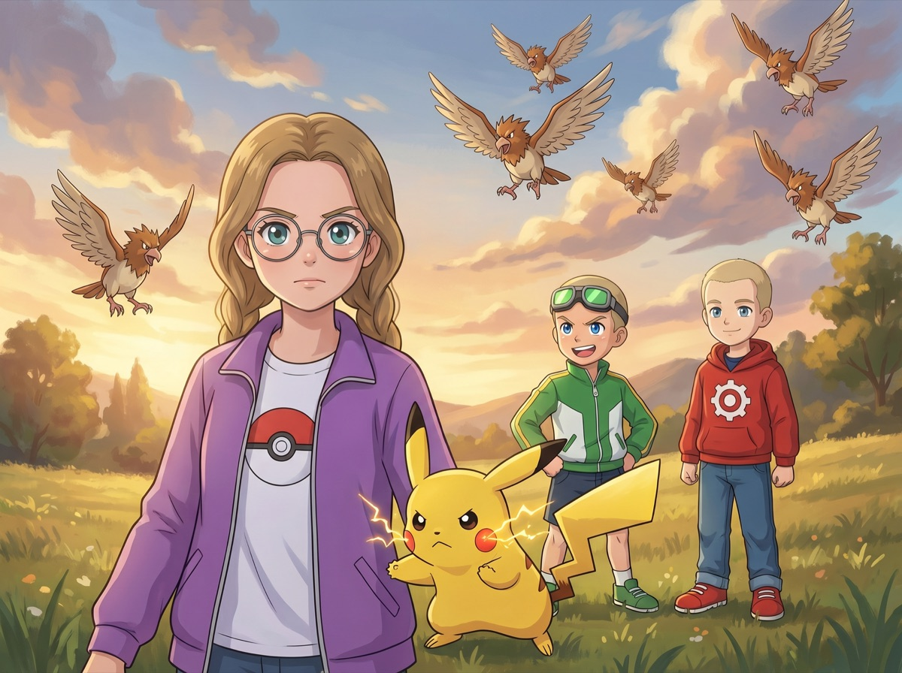

Сезон 1 — Три тренера и тайна Серебряного леса
Эпизод 1. «Девочка, которая искала друзей»
Утро в Зелёной Поляне

Городок Зелёная Поляна был маленький, тихий и очень уютный. Пахло скошенной травой и маминой выпечкой из открытых окон. В нём жили всего три сотни человек, одна аптека, один магазин с садовыми лопатами и один профессор — Профессор Дубинский, который занимался изучением покемонов. По главной улице росли старые дубы, а в парке в центре города стоял маленький фонтан в форме Псидака (Psyduck) — желтоватого утконоса с вечно озадаченным лицом, у которого из кулачков бил тонкий фонтан воды.
Каждое утро, пока весь город ещё спал, по его улицам бежала девочка со светло-каштановыми косичками, в фиолетовой куртке с покеболом на груди. На плече у неё сидел маленький жёлтый покемон с красными щёчками и хвостом-молнией — Пикачу (Pikachu).
Девочку звали Кристи.
— Пика-пика! — радостно крикнул Пикачу, указывая лапкой на стаю воробьёв, которые шумно взлетели с ветки.
— Тихо, тихо, — прошептала Кристи. — Не пугай их. Это же обычные воробьи, а не покемоны.
Пикачу немного обиделся. Он фыркнул и отвернулся.
— Ну не дуйся! — засмеялась Кристи и потрепала его по маленьким ушкам. — Ты у меня лучший покемон в целом свете. Ты ведь это знаешь, правда?
— Пика! — уже довольно ответил он и снова уютно устроился у неё на плече.
У Кристи был Покедекс — специальный электронный блокнот, куда она вносила данные о каждом покемоне. Пока в нём было восемнадцать записей. Кристи мечтала, что однажды их станет сто. Или вообще все, сколько существует в мире.
Но сегодня была суббота. А в субботу дети всегда были в парке.
У фонтана прыгали через скакалку девочки из её класса. Кристи поправила очки и пошла к ним.
— Привет! — Кристи помахала рукой.
Девочки остановились. Скакалка упала на землю.
— А, Кристи, — протянула Ника, самая высокая из трёх. — Опять со своим Пикачу бегаешь?
— Да. Мы гуляем. Хотите с нами?
Девочки переглянулись.
— Мы не хотим бегать по лесу и искать покемонов, — отозвалась одна из них. — Хочешь — прыгай с нами.
Но Профессор Дубинский вчера сказал ей кое-что важное: у Серебряного ручья видели Иви (Eevee) — редчайшего покемона, которого некоторые тренеры за всю жизнь не видели.
— Я... в другой раз, — сказала Кристи.
Всегда — «в другой раз». Всегда одна.
И пошла в сторону леса.
Пикачу ткнулся тёплым носом ей в щёку.
— Я знаю, — прошептала она ему. — Пошли в лес.
Иви в лесу
Лес начинался за последним домом — просто: дорожка, забор, а потом сразу деревья. Пахло хвоей и мокрой землёй после вчерашнего дождя. Под ногами хрустели сухие ветки.
Кристи перепрыгнула через поваленное дерево — из-под него выскочил испуганный Катерпи (Caterpie) и уполз в кусты. Она знала этот лес как свой дом: где прячется старый Сэндшрю (Sandshrew), где живёт семья Псидаков, а где в дупле ночует Хутхут (Hoothoot).
— Профессор Дубинский сказал, что Иви видели у Серебряного ручья, — пробормотала Кристи, разглядывая карту на экране Покедекса. — Это где-то вон там, за старой берёзой с дуплом.
— Пи? — с сомнением спросил Пикачу. Он смотрел вперёд, туда, где деревья становились гуще и почти смыкались кронами.
— Да, я знаю, что далеко. Но мы же не торопимся, правда?
Пикачу глубоко вздохнул, как умеют вздыхать только очень терпеливые покемоны, и остался сидеть у неё на плече. Кристи улыбнулась.
Она шла тихо. Покемоны пугаются громких звуков, и Кристи давно научилась двигаться по лесу как тень.
Серебряный ручей она услышала раньше, чем увидела. Пошла на звук, осторожно раздвигая ветки.
И замерла.

На берегу ручья, среди толстых корней старого дерева, лежал покемон.
Небольшой — примерно как Пикачу, только не жёлтый, а коричневато-рыжий. С большими круглыми ушами, которые сейчас были прижаты к голове. С пышным белым воротником вокруг шеи — как у маленькой лисички. С пушистым хвостом, который был похож на метёлку.
Это был Иви — именно тот, кого она искала. Но что-то было не так.
Иви лежал на боку и не двигался. Его передняя лапка была вытянута под неловким углом. Глаза закрыты.
Грудка чуть поднималась и опускалась — дышал, значит, живой. Но совсем не похожий на здорового.
— Пика... — тихо, почти шёпотом, выдохнул Пикачу. Он прижал ушки и сжался на плече Кристи.
Кристи стиснула руки так, что побелели костяшки.
Она медленно, очень медленно, ступила вперёд. Не спеша опустилась на колени прямо на влажную траву у берега ручья. Протянула руку — осторожно, ладонью вниз, чтобы не пугать.
— Привет, — прошептала она. — Я не причиню тебе вред. Совсем. Обещаю.
Иви открыл один глаз. Большой, коричневый — тёмный и тёплый, как спелый каштан. Смотрел на Кристи. Потом закрыл снова.
Кристи не отдёрнула руку. Она осталась на месте и просто ждала.
Через минуту Иви снова открыл оба глаза. Смотрел на неё — осторожно, оценивающе. Потом на Пикачу. Потом снова на Кристи.
Кристи осторожно провела рукой по его боку — проверяла, нет ли других повреждений. Рёбра целые. Голова — без ссадин. А вот лапка... Иви слабо дёрнулся, когда она её осторожно коснулась.
— Да, больно, — прошептала Кристи. — Понимаю. Но, кажется, не сломана — просто ушибся или зацепился за корни. Я помогу.
Она достала из кармана куртки небольшой тюбик с лечебным спреем — тем самым, что всегда носила с собой на случай, если кому-то из покемонов понадобится помощь.

Кристи умела им пользоваться лучше, чем большинство детей, — она тренировалась на плюшевых покемонах ещё год назад.
— Немного защиплет, — предупредила она. — Но честно-честно, потом станет лучше. Вот увидишь.
Иви смотрел на неё. Он не убежал. Может, не мог. А может, почувствовал что-то — какую-то спокойную уверенность в голосе этой девочки с косичками.
Кристи аккуратно нанесла спрей на лапку. Иви дёрнулся, тихо пискнул — но не убежал и не укусил. Просто чуть зажмурился.
— Вот. Уже всё, — Кристи убрала тюбик. — Теперь нужен отдых. Но здесь оставаться нельзя — ночью в лесу холодно, и ты можешь простудиться. А когда простывший покемон голоден, это вдвойне плохо.
Она задумалась на секунду. Потом решилась.
— Хочешь пойти со мной? Я живу недалеко. У меня дома тепло, есть мягкий плед и ягоды Оран — они вкусные и хорошо восстанавливают силы. Я умею ухаживать за покемонами — правда-правда.
Пикачу тем временем слез с её плеча и подошёл к Иви. Сел рядом — аккуратно, не слишком близко, чтобы не напугать. Посмотрел на него серьёзно и неторопливо кивнул, как будто говорил: «Она хорошая. Я могу это подтвердить».
Иви долго смотрел на Пикачу. Потом на Кристи. Потом снова на Пикачу.
Потом медленно — прихрамывая на больную лапку — поднялся.
И сделал шаг к Кристи.
Иви дома
Мама Кристи — невысокая женщина с такими же светло-каштановыми волосами, которые она обычно убирала в узел, — вышла на крыльцо, когда услышала знакомые шаги по дорожке. Посмотрела на дочь. Посмотрела на Пикачу. Посмотрела на прихрамывающего коричневого пушистика, который шёл рядом.
— Снова кого-то подобрала в лесу? — спросила она.
— Мам, он ранен. Лапка. Можно он у нас поживёт, пока не поправится?
Мама вздохнула — не сердито, а устало и немного смешливо. Она привыкла.
— Ладно. Но клетку не ставить, в мою кровать не пускать и не кормить его черничным вареньем — оно слишком сладкое для покемонов. Договорились?
— Договорились! — Кристи просияла. — Спасибо, мам!

Иви устроился в углу гостиной, на старом мягком пледе, который Кристи притащила с антресолей. Пикачу лёг рядом — не вплотную, но достаточно близко, чтобы Иви не чувствовал себя одиноким.
Кристи принесла две миски: одну с водой, другую с ягодами Оран (Oran Berry) — маленькими синими ягодками, похожими на чернику. Они помогали покемонам быстрее восстанавливаться.
Иви осторожно понюхал ягоду, съел её — аккуратно, почти интеллигентно. Потом ещё одну. Поднял глаза на Кристи.
— Вкусно? — спросила она.
— Ии! — тихо отозвался Иви. Голос у него был мягкий, совсем не громкий — как будто кто-то произнёс «ой» очень нежно.
Это был его первый звук с тех пор, как они встретились в лесу.
Кристи улыбнулась и села на пол рядом, открыв Покедекс. В статье про Иви говорилось: «Доверяет людям медленно и осторожно, но если доверился — верен навсегда».
— Слушай, — Кристи села рядом на пол. — Я не буду заставлять тебя становиться моим покемоном. Выздоровеешь — и сам решишь: путешествовать со мной или вернуться в лес. Хорошо?
Иви встал с пледа, подошёл к Кристи и ткнулся тёплой мордочкой ей в ладонь.
— Эй, — прошептала Кристи. — Ты уже решил?
— Ии, — снова ответил Иви. Совсем тихо. Но очень ясно.
Пикачу на своём краешке пледа радостно захлопал маленькими лапками.
— Пикапика!
— Тихо! — засмеялась Кристи. — Мама на кухне варит варенье, не шуми!
— Пика!
— Ну всё, всё, хорошо, можно немного шуметь.
Она почесала Иви за ушком. Пикачу подлез с другой стороны и ткнулся ему в бок.
Не нужно ничего заставлять. Просто помоги — и кто-то сам захочет быть рядом.
Вечером она аккуратно записала в Покедекс: «Иви. Найден у Серебряного ручья. Ранен, вылечен. Теперь мой друг».
Запись номер девятнадцать.
Новость о новичках — и клиффхэнгер
На следующее утро лапка у Иви почти не болела. Кристи это поняла ещё до завтрака — потому что когда вошла в гостиную, то увидела, что Иви уже не лежит на пледе, а осторожно исследует комнату: нюхает ножки стола, смотрит на полки с книгами, принюхивается к горшку с цветком на подоконнике.
— Хорошее утро, — сказала Кристи. — Чувствуешь себя лучше?
— Ии! — Иви подбежал к ней, прихрамывая совсем чуть-чуть, и ткнулся мордой в её ногу.
— Отлично. Сегодня пойдём на маленькую прогулку — спокойную, недалеко. Просто подышать воздухом и привыкнуть ходить вместе.
Пикачу уже сидел у неё на плече, свежий и готовый к новому дню. Кристи заметила, что он смотрит на Иви с каким-то новым, чуть покровительственным выражением — как старший смотрит на младшего, которого взял под своё крыло.
— Не задирайся, — предупредила она его.
— Пика! — обиженно фыркнул Пикачу.
— Просто говорю.
За завтраком мама поставила на стол овсяную кашу с малиной и большой стакан апельсинового сока. Иви устроился у ног Кристи. Пикачу взобрался на стул рядом и с откровенной надеждой уставился на кашу.
— Тебе нельзя, — Кристи не подняла глаз от тарелки. — Это человеческая еда.
— Пика! — возмутился Пикачу.
— После завтрака дам ягоды Оран и кусочек Мирной ягоды. Обещаю.
Пикачу скрестил лапки и отвернулся — но не слишком убедительно.
— Кристи, — мама села напротив, обернув руки вокруг кружки с горячим чаем. — Ты слышала новость? Вчера вечером в город приехали двое мальчиков. Говорят, хотят стать тренерами покемонов. Записались к Профессору Дубинскому на сегодня — за первыми покемонами.
Кристи медленно положила ложку.
— Новички?
— Да. Соседка Мирта видела их вчера у вокзала. Говорит — два мальчика, примерно твоего возраста, с большими рюкзаками. Очень воодушевлённые. Один — быстрый и шумный, другой — тихий, но с такими глазами, будто всё вокруг замечает и запоминает.
Кристи задумалась. В Зелёной Поляне новые тренеры появлялись редко. Их городок был маленьким — большинство детей покемонами особо не интересовались. А тут сразу двое, и сразу к Профессору Дубинскому.
— Интересно, — сказала она.
— Сходи познакомься, — предложила мама. Она сказала это как будто между прочим — но Кристи заметила, как мама посмотрела на неё. Чуть дольше, чем обычно.
— Может, — Кристи пожала плечами.
Но сама подумала: «Может, и нет». С ней обычно другим детям было интересно только первые пять минут — пока она не начинала рассказывать про типы покемонов, их эволюции и маршруты. После этого все как-то быстро находили дела поважнее.
Она доела кашу, убрала тарелку в раковину, взяла рюкзак, покедекс, запасной тюбик лечебного спрея и вышла на улицу.
Иви шёл рядом своими лапками и принюхивался ко всему подряд. Пикачу сидел на плече и смотрел поверх заборов с видом знатока.
Кристи шла без особой цели, но ноги сами несли её к восточной части города.
Туда, где стояла лаборатория Профессора Дубинского.
Лаборатория была старым домом из красного кирпича, с садиком, где бродили Псидаки (Psyduck) и Мунчлакс (Munchlax).
Но сегодня, ещё не доходя до лаборатории, Кристи услышала странный шум.
Это был не обычный звук — не пение птиц и не шорох ветра. Это были голоса. Крики.
И — что-то другое, более тревожное. Тяжёлое хлопанье крыльев. Свист воздуха. И пронзительный, злой, режущий уши крик:
— Спиаа! Спиаа! СПИАА!

Кристи остановилась.
Пикачу на её плече напрягся. Иви встал рядом с ней, прижав уши.
Кристи знала этот крик. Знала его очень хорошо.
Спироу (Spearow) — злые птицы-покемоны с острыми клювами и красными гребнями. Если потревожить гнездо — атакуют всей стаей, без предупреждения. Именно там, за холмом, Кристи знала, было несколько гнёзд.
На крыльцо лаборатории выбежал Профессор Дубинский. Халат был нараспашку, очки съехали на нос.
— Кристи! — воскликнул он, увидев её. — Хорошо, что ты здесь! Там, за холмом — те двое мальчиков, новых! Они только что ушли с покемонами и пошли по дороге к лесу, я пытался их остановить, но они так торопились, и я не успел объяснить про гнёзда, и теперь...
— Спироу, — коротко сказала Кристи.
— Именно! — Профессор взмахнул руками. — Там целая стая!
Кристи уже не слушала.
Она бежала.
Пикачу на её плече крепко вцепился в косичку — держался. Иви мчался рядом, в полшага от неё — лапка чуть ещё болела, но он не отставал ни на метр.
Она выбежала на поляну за холмом и увидела их.
Двое мальчиков стояли посреди высокой травы. Один — худощавый, в зелёной спортивной куртке с жёлтой полоской на рукавах, зелёные гоглы сбились на лоб. С покеболом в руке. Второй — чуть шире в плечах, в красной худи с маленькой шестерёнкой на груди, новый рюкзак за спиной. Оба смотрели вверх с одинаковым выражением: «Мы этого не планировали».
Над ними кружила стая Спироу.
Их было не меньше десятка — злые, взъерошенные, кружащие всё ниже и ниже.
Кристи сделала глубокий вдох.
— Пикачу, — тихо и чётко. — Готов?
— Пика! — ответил Пикачу. Он уже выпрямился во весь рост. Его красные щёчки потрескивали тихими искрами. Хвост стоял горизонтально — боевая стойка.
— Иви — держись рядом со мной. Не атакуй пока, жди команды.
— Ии, — серьёзно ответил Иви. Он встал у её левой ноги, весь подобравшись.
Светловолосый мальчик заметил Кристи первым.
— Эй! — крикнул он. — Ты тоже тренер?
— Да! — крикнула она в ответ. — Оба — бегите за мою спину. Быстро! Не машите руками и не смотрите им в глаза!
Стая Спироу снизилась ещё. До земли оставалось метра три.
Мальчики переглянулись. Потом — к их чести — не стали спорить. Быстро отошли к Кристи.

Кристи стояла перед стаей. Ноги на ширине плеч. Покедекс убран. Взгляд — прямо, спокойно, уверенно.
Пикачу раздул щёки. Хвост засветился золотым от накопленного электричества.
Стая была совсем близко. Позади Кристи стояли двое незнакомых мальчиков. И она была единственная, кто мог им помочь.
Продолжение — в Эпизоде 2: «Двое новичков и стая Спироу».
Урок этого эпизода
Друзья появляются тогда, когда ты помогаешь другим.